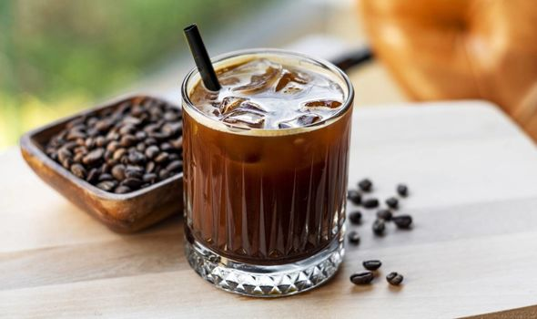

About Cold Brew
Cold Brew is a method of coffee preparation that involves steeping coarsely ground coffee beans in cold water for an extended period. It results in a smooth, less acidic, and highly caffeinated coffee.

Ways of Preparation
Cold Brew can be prepared in various ways, including:
- Classic Cold Brew: Coarse coffee grounds steeped in cold water for 12-24 hours
- Nitro Cold Brew: Cold Brew infused with nitrogen for a creamy texture
Calories in Cold Brew
The table below shows the approximate calories in cold brew based on different factors:
| Factors | Calories |
|---|---|
| Classic Cold Brew (12 oz) | 5 |
| Nitro Cold Brew (12 oz) | 10 |